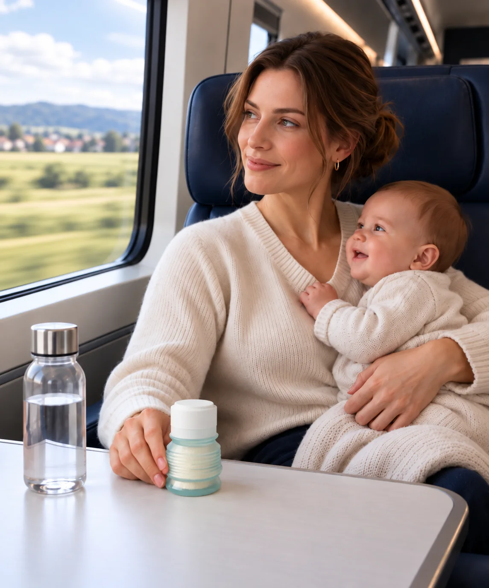
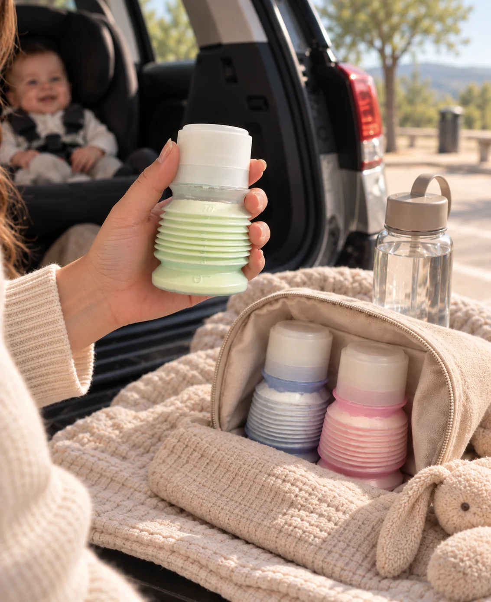
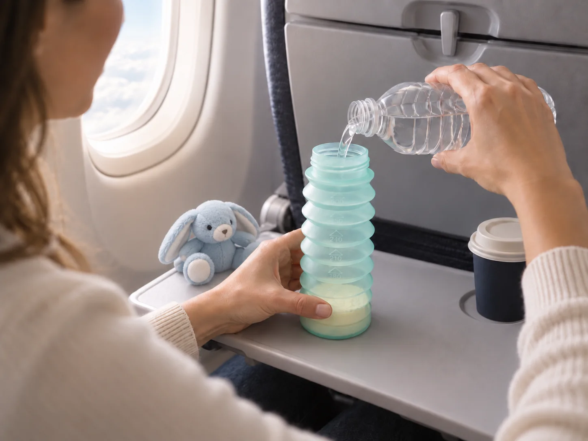
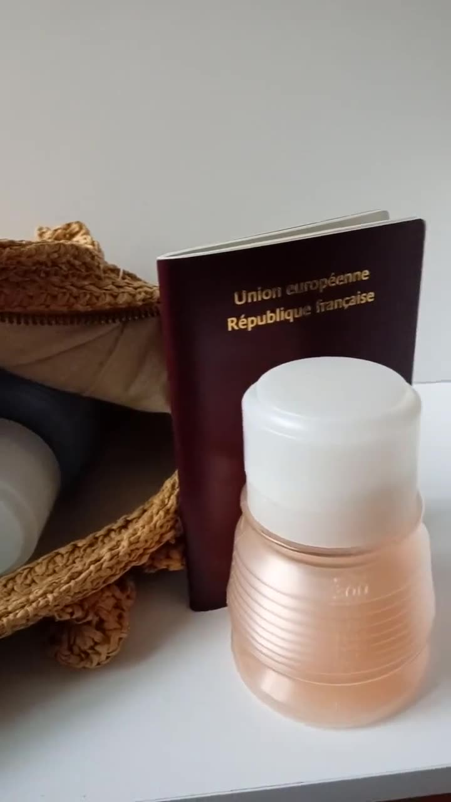
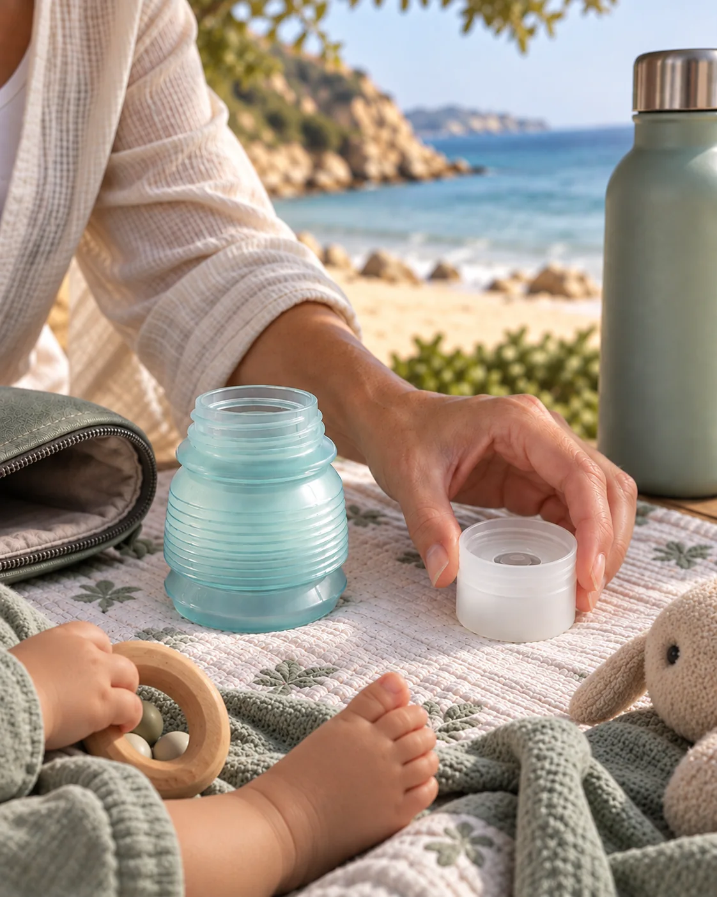

Pré-doser
Versez chaque dose de poudre dans un BIBEON propre et parfaitement sec.
Voyager avec bébé
Un biberon et sa dose de lait en poudre réunis en un seul objet. Petit quand vous partez, grand quand bébé a faim.
Préparer la sortie ↓1BIBEON par repas
3gestes sur place
4pièces seulement
300 mlune fois déplié
Avant de partir
Versez chaque dose de poudre dans un BIBEON propre et parfaitement sec.
La poudre reste protégée dans le flacon replié jusqu’au moment du repas.
Ajoutez séparément la quantité d’eau nécessaire. Rien n’est encore mélangé.

Les repas sont pré-dosés.
Le sac reste léger.
Sur place
Peu de place, peu de pièces, peu de manipulations. Le repas se prépare juste avant la tétée.
Voir le fonctionnement complet →Ouvrez chaque soufflet en accordéon.
Ajoutez un peu d’eau, refermez et agitez.
Ajoutez le reste de l’eau jusqu’au niveau prévu.
Selon le déplacement

Film 02 · Préparer à l’arrêt01
Préparez toujours le biberon à l’arrêt, sur un support propre et stable. Les repas pré-dosés restent rangés jusqu’à la prochaine pause.

Film 03 · Petite tablette02
Peu de place pour préparer, peu de pièces à manipuler. Posez le bloc à l’envers, puis ajoutez l’eau.

Film 04 · Sous le passeport03
Emportez la poudre pré-dosée et vérifiez les règles de l’aéroport, de la compagnie et du pays avant le départ.

Film 05 · Dehors04
Gardez la poudre, l’eau et le biberon à l’abri du soleil, de la chaleur, du sable et des éclaboussures.
Une heure ou plusieurs jours
Ils l’emportent
« Il tient dans une poche de manteau. »Denise R. · 2025
« Il ne quitte plus notre sac à langer. »Charlotte V. · 2025
« Un essentiel des voyages en avion. »Carole B. · 2024
Avant de fermer le sac
Le repas prend moins de place. Pas moins de précautions.
La prochaine sortie
Cinq coloris. À partir de 35 €.
Choisir celui qui part →